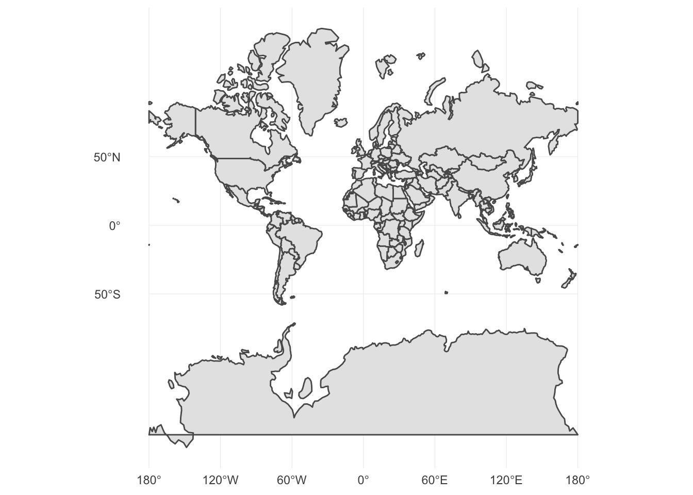

Geospatial visualization
Geospatial visualizations
Geospatial visualizations are one of the earliest forms of information visualizations. They were used historically for navigation and were essential tools before the modern technological era of humanity. Data maps were first popularized in the seventeenth century and have grown in complexity and detail since then. Consider Google Maps, the sheer volume of data depicted, and the analytical pathways available to its users. Of course geospatial data visualizations do not require computational skills to generate.
John Snow and the Broad Street water pump

In the nineteenth century the theory of bacteria was not widely accepted by the medical community or the public.1 A mother washed her baby’s diaper in a well in 1854 in London, sparking an outbreak of cholera, an intestinal disease that causes vomiting, diarrhea, and eventually death. This disease had presented itself previously in London but its cause was still unknown.
Dr. John Snow lived in Soho, the suburb of London where the disease manifested in 1854, and wanted to understand how cholera spreads through a population (an early day epidemiologist). Snow recorded the location of individuals who contracted cholera, including their places of residence and employment. He used this information to draw a map of the region, recording the location of individuals who contracted the disease. They seemed to be clustered around the well pump along Broad Street. Snow used this map to deduce the source of the outbreak was the well, observing that almost all of the infected individuals lived near, and drank from, the well. Based on this information, the government removed the handle from the well pump so the public could not draw water from it. As a result, the cholera epidemic ended.
Carte figurative des pertes successives en hommes de l’Armée Française dans la campagne de Russie 1812-1813)


This illustration is identifed in Edward Tufte’s The Visual Display of Quantitative Information as one of “the best statistical drawings ever created”. It also demonstrates a very important rule of warfare: never invade Russia in the winter.
In 1812, Napoleon ruled most of Europe. He wanted to seize control of the British islands, but could not overcome the UK defenses. He decided to impose an embargo to weaken the nation in preparation for invasion, but Russia refused to participate. Angered at this decision, Napoleon launched an invasion of Russia with over 400,000 troops in the summer of 1812. Russia was unable to defeat Napoleon in battle, but instead waged a war of attrition. The Russian army was in near constant retreat, burning or destroying anything of value along the way to deny France usable resources. While Napoleon’s army maintained the military advantage, his lack of food and the emerging European winter decimated his forces. He left France with an army of approximately 422,000 soldiers; he returned to France with just 10,000.
Charles Minard’s map is a stunning achievement for his era. It incorporates data across six dimensions to tell the story of Napoleon’s failure. The graph depicts:
- Size of the army
- Location in two physical dimensions (latitude and longitude)
- Direction of the army’s movement
- Temperature on dates during Napoleon’s retreat
What makes this such an effective visualization?2
- Forces visual comparisons (colored bands for advancing and retreating)
- Shows causality (temperature chart)
- Captures multivariate complexity
- Integrates text and graphic into a coherent whole (perhaps the first infographic, and done well!)
- Illustrates high quality content (based on reliable data)
- Places comparisons adjacent to each other (all on the same page, no jumping back and forth between pages)
- Mimimalistic in nature (avoids what we will later term “chart junk”)
Designing modern maps
Geometric visualizations are used to depict spatial features, and with the incorporation of data reveal additional attributes and information. The main features of a map are defined by its scale (the proportion between distances and sizes on the map), its projection (how the three-dimensional Earth is represented on a two-dimensional surface), and its symbols (how data is depicted and visualized on the map).
Scale
Projection
Projection is the process of taking a globe (i.e. a three-dimensional object)3 and visualizing it on a two-dimensional picture. There is no 100% perfect method for doing this, as any projection method will have to distort some features of the map to achieve a two-dimensional representation. There are five properties to consider when defining a projection method:
- Shape
- Area
- Angles
- Distance
- Direction
Projection methods typically maximize the accuracy of one or two of these properties, but no more. For instance, the mercator projection preserves shape and area and is very useful for sea navigation, but distorts the area of landmasses.
## Reading layer `ne_110m_admin_0_countries' from data source `/Users/soltoffbc/Projects/Computing for Social Sciences/uc-cfss.github.io/data/nautral_earth/ne_110m_admin_0_countries/ne_110m_admin_0_countries.shp' using driver `ESRI Shapefile'
## Simple feature collection with 177 features and 63 fields
## geometry type: MULTIPOLYGON
## dimension: XY
## bbox: xmin: -180 ymin: -90 xmax: 180 ymax: 83.6
## epsg (SRID): 4326
## proj4string: +proj=longlat +datum=WGS84 +no_defs
## Reading layer `ne_110m_admin_0_countries' from data source `/Users/soltoffbc/Projects/Computing for Social Sciences/uc-cfss.github.io/data/nautral_earth/ne_110m_admin_0_countries/ne_110m_admin_0_countries.shp' using driver `ESRI Shapefile'
## Simple feature collection with 177 features and 63 fields
## geometry type: MULTIPOLYGON
## dimension: XY
## bbox: xmin: -180 ymin: -90 xmax: 180 ymax: 83.6
## epsg (SRID): 4326
## proj4string: +proj=longlat +datum=WGS84 +no_defs
## Reading layer `ne_110m_admin_0_countries' from data source `/Users/soltoffbc/Projects/Computing for Social Sciences/uc-cfss.github.io/data/nautral_earth/ne_110m_admin_0_countries/ne_110m_admin_0_countries.shp' using driver `ESRI Shapefile'
## Simple feature collection with 177 features and 63 fields
## geometry type: MULTIPOLYGON
## dimension: XY
## bbox: xmin: -180 ymin: -90 xmax: 180 ymax: 83.6
## epsg (SRID): 4326
## proj4string: +proj=longlat +datum=WGS84 +no_defs
Symbols
Acknowledgments
- Cairo, A. (2016). The truthful art: Data, charts, and maps for communication. New Riders.
- Tufte, E., & Graves-Morris, P. (2001). The visual display of quantitative information. Graphics Press.
Session Info
## setting value
## version R version 3.5.0 (2018-04-23)
## system x86_64, darwin15.6.0
## ui X11
## language (EN)
## collate en_US.UTF-8
## tz America/Chicago
## date 2018-06-21
##
## package * version date source
## assertthat 0.2.0 2017-04-11 CRAN (R 3.5.0)
## backports 1.1.2 2017-12-13 CRAN (R 3.5.0)
## base * 3.5.0 2018-04-24 local
## bindr 0.1.1 2018-03-13 CRAN (R 3.5.0)
## bindrcpp 0.2.2 2018-03-29 CRAN (R 3.5.0)
## broom 0.4.4 2018-03-29 CRAN (R 3.5.0)
## cellranger 1.1.0 2016-07-27 CRAN (R 3.5.0)
## class 7.3-14 2015-08-30 CRAN (R 3.5.0)
## classInt 0.2-3 2018-04-16 CRAN (R 3.5.0)
## cli 1.0.0 2017-11-05 CRAN (R 3.5.0)
## codetools 0.2-15 2016-10-05 CRAN (R 3.5.0)
## colorspace 1.3-2 2016-12-14 CRAN (R 3.5.0)
## compiler 3.5.0 2018-04-24 local
## crayon 1.3.4 2017-09-16 CRAN (R 3.5.0)
## datasets * 3.5.0 2018-04-24 local
## DBI 1.0.0 2018-05-02 CRAN (R 3.5.0)
## devtools 1.13.5 2018-02-18 CRAN (R 3.5.0)
## digest 0.6.15 2018-01-28 CRAN (R 3.5.0)
## dplyr * 0.7.5 2018-05-19 CRAN (R 3.5.0)
## e1071 1.6-8 2017-02-02 CRAN (R 3.5.0)
## evaluate 0.10.1 2017-06-24 CRAN (R 3.5.0)
## forcats * 0.3.0 2018-02-19 CRAN (R 3.5.0)
## foreign 0.8-70 2017-11-28 CRAN (R 3.5.0)
## ggplot2 * 2.2.1.9000 2018-06-07 Github (hadley/ggplot2@4db5122)
## glue 1.2.0 2017-10-29 CRAN (R 3.5.0)
## graphics * 3.5.0 2018-04-24 local
## grDevices * 3.5.0 2018-04-24 local
## grid 3.5.0 2018-04-24 local
## gtable 0.2.0 2016-02-26 CRAN (R 3.5.0)
## haven 1.1.1 2018-01-18 CRAN (R 3.5.0)
## hms 0.4.2 2018-03-10 CRAN (R 3.5.0)
## htmltools 0.3.6 2017-04-28 CRAN (R 3.5.0)
## httr 1.3.1 2017-08-20 CRAN (R 3.5.0)
## jsonlite 1.5 2017-06-01 CRAN (R 3.5.0)
## knitr 1.20 2018-02-20 CRAN (R 3.5.0)
## lattice 0.20-35 2017-03-25 CRAN (R 3.5.0)
## lazyeval 0.2.1 2017-10-29 CRAN (R 3.5.0)
## lubridate 1.7.4 2018-04-11 CRAN (R 3.5.0)
## magrittr 1.5 2014-11-22 CRAN (R 3.5.0)
## memoise 1.1.0 2017-04-21 CRAN (R 3.5.0)
## methods * 3.5.0 2018-04-24 local
## mnormt 1.5-5 2016-10-15 CRAN (R 3.5.0)
## modelr 0.1.2 2018-05-11 CRAN (R 3.5.0)
## munsell 0.4.3 2016-02-13 CRAN (R 3.5.0)
## nlme 3.1-137 2018-04-07 CRAN (R 3.5.0)
## parallel 3.5.0 2018-04-24 local
## pillar 1.2.3 2018-05-25 CRAN (R 3.5.0)
## pkgconfig 2.0.1 2017-03-21 CRAN (R 3.5.0)
## plyr 1.8.4 2016-06-08 CRAN (R 3.5.0)
## psych 1.8.4 2018-05-06 CRAN (R 3.5.0)
## purrr * 0.2.5 2018-05-29 CRAN (R 3.5.0)
## R6 2.2.2 2017-06-17 CRAN (R 3.5.0)
## Rcpp 0.12.17 2018-05-18 CRAN (R 3.5.0)
## readr * 1.1.1 2017-05-16 CRAN (R 3.5.0)
## readxl 1.1.0 2018-04-20 CRAN (R 3.5.0)
## reshape2 1.4.3 2017-12-11 CRAN (R 3.5.0)
## rlang 0.2.1 2018-05-30 CRAN (R 3.5.0)
## rmarkdown 1.9 2018-03-01 CRAN (R 3.5.0)
## rprojroot 1.3-2 2018-01-03 CRAN (R 3.5.0)
## rstudioapi 0.7 2017-09-07 CRAN (R 3.5.0)
## rvest 0.3.2 2016-06-17 CRAN (R 3.5.0)
## scales 0.5.0 2017-08-24 CRAN (R 3.5.0)
## sf * 0.6-3 2018-05-17 CRAN (R 3.5.0)
## spData 0.2.8.3 2018-03-25 CRAN (R 3.5.0)
## stats * 3.5.0 2018-04-24 local
## stringi 1.2.2 2018-05-02 CRAN (R 3.5.0)
## stringr * 1.3.1 2018-05-10 CRAN (R 3.5.0)
## tibble * 1.4.2 2018-01-22 CRAN (R 3.5.0)
## tidyr * 0.8.1 2018-05-18 CRAN (R 3.5.0)
## tidyselect 0.2.4 2018-02-26 CRAN (R 3.5.0)
## tidyverse * 1.2.1 2017-11-14 CRAN (R 3.5.0)
## tools 3.5.0 2018-04-24 local
## udunits2 0.13 2016-11-17 CRAN (R 3.5.0)
## units 0.5-1 2018-01-08 CRAN (R 3.5.0)
## utils * 3.5.0 2018-04-24 local
## withr 2.1.2 2018-03-15 CRAN (R 3.5.0)
## xml2 1.2.0 2018-01-24 CRAN (R 3.5.0)
## yaml 2.1.19 2018-05-01 CRAN (R 3.5.0)Drawn from John Snow and the Broad Street Pump↩
Source: Dataviz History: Charles Minard’s Flow Map of Napoleon’s Russian Campaign of 1812↩
Assuming you are not a flat-Earther.↩
This work is licensed under the CC BY-NC 4.0 Creative Commons License.